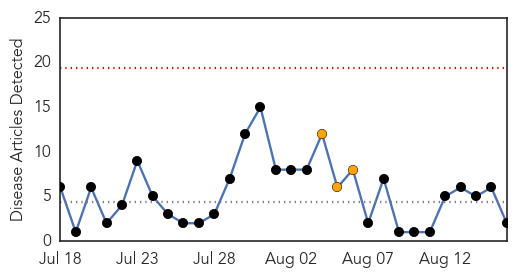
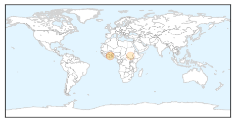
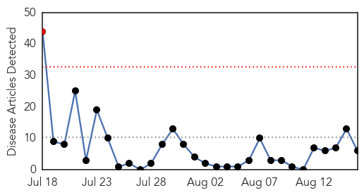
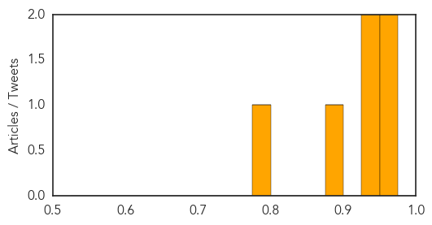

Cholera
30-Day Web Trend
0 alerts, 3 warnings

30-Day Twitter Trend
5 alerts, 0 warnings

Article Locations
Article Confidences

Top Articles:
Top Tweets:
-
No tweets found for Aug 16, 2014
Chikungunya
30-Day Web Trend
1 alerts, 0 warnings

30-Day Twitter Trend
0 alerts, 0 warnings

Article Locations
Article Confidences
Top Articles:
- 0.953
- New vaccine against chikungunya gives promising results
- 0.952
- New vaccine against chikungunya gives promising results
- 0.950
- Health, Education ministries discuss chikungunya threat to schools
- 0.934
- Vaccine against Chikungunya Shows Positive Response in Human Trial
- 0.896
- Chikungunya vaccine shows promise, NIH says
- 0.792
- Chikungunya cases in Jamaica now at 10
Top Tweets:
-
No tweets found for Aug 16, 2014